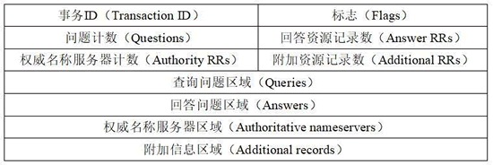

首页 > 编程笔记
DNS报文格式解析（非常详细）
DNS 分为查询请求和查询响应，请求和响应的报文结构基本相同。DNS 报文格式如图所示。
整个 DNS 格式主要分为 3 部分内容，即基础结构部分、问题部分、资源记录部分。下面将详细地介绍每部分的内容及含义。
该部分中每个字段含义如下。
基础结构部分中的标志字段又分为若干个字段，如图所示。
标志字段中每个字段的含义如下：
为了能够更好地了解 DNS 数据包的基础结构部分，下面通过捕获的 DNS 数据包查看基础结构部分。
1) DNS 请求数据包基础结构部分，如图所示。
图中的数据包为 DNS 请求包，Domain Name System(query) 部分方框标注中的信息为 DNS 报文中的基础结构部分。
为了方便讲解这里将信息列出进行说明：
2) DNS 响应数据包基础结构部分如图所示。
图中方框标注部分为响应包中基础结构部分，每个字段如下：
问题部分格式如图所示。
该部分中每个字段含义如下：
1) DNS 请求包的问题部分字段信息，如图所示。
在下图中，Queries 部分的信息为问题部分信息，每个字段说明如下：
2) DNS 响应包的问题部分字段信息，如图所示。
从图中 Queries 部分中可以看到，响应包中的查询类型也是 A，与请求包的查询类型是一致的。
资源记录格式中每个字段含义如下：
资源记录部分只有在 DNS 响应包中才会出现。下面通过 DNS 响应包来进一步了解资源记录部分的字段信息。
1) DNS 响应包的资源记录部分的字段信息，如图所示。
其中，方框中标注的信息为 DNS 响应报文的资源记录部分信息。该部分信息主要分为三部分信息，即回答问题区域、权威名称服务器区域、附加信息区域，下面依次分析这三部分信息。
2) 回答问题区域字段的资源记录部分信息如下：
3) 权威名称服务器区域字段的资源记录部分信息如下：
4) 附加信息区域字段的资源记录部分信息如下：
例如，权威名称服务器名称 ns7.baidu.com 对应的 IP 地址为 180.76.76.92。

上图中显示了 DNS 的报文格式。其中，事务 ID、标志、问题计数、回答资源记录数、权威名称服务器计数、附加资源记录数这 6 个字段是DNS的报文首部，共 12 个字节。整个 DNS 格式主要分为 3 部分内容，即基础结构部分、问题部分、资源记录部分。下面将详细地介绍每部分的内容及含义。
基础结构部分
DNS 报文的基础结构部分指的是报文首部，如图所示。- 事务 ID：DNS 报文的 ID 标识。对于请求报文和其对应的应答报文，该字段的值是相同的。通过它可以区分 DNS 应答报文是对哪个请求进行响应的。
- 标志：DNS 报文中的标志字段。
- 问题计数：DNS 查询请求的数目。
- 回答资源记录数：DNS 响应的数目。
- 权威名称服务器计数：权威名称服务器的数目。
- 附加资源记录数：额外的记录数目（权威名称服务器对应 IP 地址的数目）。
基础结构部分中的标志字段又分为若干个字段，如图所示。
- QR（Response）：查询请求/响应的标志信息。查询请求时，值为 0；响应时，值为 1。
- Opcode：操作码。其中，0 表示标准查询；1 表示反向查询；2 表示服务器状态请求。
- AA（Authoritative）：授权应答，该字段在响应报文中有效。值为 1 时，表示名称服务器是权威服务器；值为 0 时，表示不是权威服务器。
- TC（Truncated）：表示是否被截断。值为 1 时，表示响应已超过 512 字节并已被截断，只返回前 512 个字节。
- RD（Recursion Desired）：期望递归。该字段能在一个查询中设置，并在响应中返回。该标志告诉名称服务器必须处理这个查询，这种方式被称为一个递归查询。如果该位为 0，且被请求的名称服务器没有一个授权回答，它将返回一个能解答该查询的其他名称服务器列表。这种方式被称为迭代查询。
- RA（Recursion Available）：可用递归。该字段只出现在响应报文中。当值为 1 时，表示服务器支持递归查询。
- Z：保留字段，在所有的请求和应答报文中，它的值必须为 0。
- rcode（Reply code）：返回码字段，表示响应的差错状态。当值为 0 时，表示没有错误；当值为 1 时，表示报文格式错误（Format error），服务器不能理解请求的报文；当值为 2 时，表示域名服务器失败（Server failure），因为服务器的原因导致没办法处理这个请求；当值为 3 时，表示名字错误（Name Error），只有对授权域名解析服务器有意义，指出解析的域名不存在；当值为 4 时，表示查询类型不支持（Not Implemented），即域名服务器不支持查询类型；当值为 5 时，表示拒绝（Refused），一般是服务器由于设置的策略拒绝给出应答，如服务器不希望对某些请求者给出应答。
为了能够更好地了解 DNS 数据包的基础结构部分，下面通过捕获的 DNS 数据包查看基础结构部分。
1) DNS 请求数据包基础结构部分，如图所示。
为了方便讲解这里将信息列出进行说明：
Domain Name System (query)
Transaction ID: 0x9ad0 #事务ID
Flags: 0x0000 Standard query #报文中的标志字段
0... .... .... .... = Response: Message is a query
#QR字段, 值为0, 因为是一个请求包
.000 0... .... .... = Opcode: Standard query (0)
#Opcode字段, 值为0, 因为是标准查询
.... ..0. .... .... = Truncated: Message is not truncated
#TC字段
.... ...0 .... .... = Recursion desired: Don't do query recursively
#RD字段
.... .... .0.. .... = Z: reserved (0) #保留字段, 值为0
.... .... ...0 .... = Non-authenticated data: Unacceptable
#保留字段, 值为0
Questions: 1 #问题计数, 这里有1个问题
Answer RRs: 0 #回答资源记录数
Authority RRs: 0 #权威名称服务器计数
Additional RRs: 0 #附加资源记录数
以上输出信息显示了 DNS 请求报文中基础结构部分中包含的字段以及对应的值。这里需要注意的是，在请求中 Questions 的值不可能为 0；Answer RRs，Authority RRs，Additional RRs 的值都为 0，因为在请求中还没有响应的查询结果信息。这些信息在响应包中会有相应的值。2) DNS 响应数据包基础结构部分如图所示。
Domain Name System (response)
Transaction ID: 0x9ad0 #事务ID
Flags: 0x8180 Standard query response, No error #报文中的标志字段
1... .... .... .... = Response: Message is a response
#QR字段, 值为1, 因为是一个响应包
.000 0... .... .... = Opcode: Standard query (0) # Opcode字段
.... .0.. .... .... = Authoritative: Server is not an authority for
domain #AA字段
.... ..0. .... .... = Truncated: Message is not truncated
#TC字段
.... ...1 .... .... = Recursion desired: Do query recursively
#RD字段
.... .... 1... .... = Recursion available: Server can do recursive
queries #RA字段
.... .... .0.. .... = Z: reserved (0)
.... .... ..0. .... = Answer authenticated: Answer/authority portion
was not authenticated by the server
.... .... ...0 .... = Non-authenticated data: Unacceptable
.... .... .... 0000 = Reply code: No error (0) #返回码字段
Questions: 1
Answer RRs: 2
Authority RRs: 5
Additional RRs: 5
以上输出信息中加粗部分为 DNS 响应包比请求包中多出来的字段信息，这些字段信息只能出现在响应包中。在输出信息最后可以看到 Answer RRs，Authority RRs，Additional RRs 都有了相应的值（不一定全为 0）。
问题部分
问题部分指的是报文格式中查询问题区域（Queries）部分。该部分是用来显示 DNS 查询请求的问题，通常只有一个问题。该部分包含正在进行的查询信息，包含查询名（被查询主机名字）、查询类型、查询类。问题部分格式如图所示。
- 查询名：一般为要查询的域名，有时也会是 IP 地址，用于反向查询。
- 查询类型：DNS 查询请求的资源类型。通常查询类型为 A 类型，表示由域名获取对应的 IP 地址。
- 查询类：地址类型，通常为互联网地址，值为 1。
1) DNS 请求包的问题部分字段信息，如图所示。
在下图中，Queries 部分的信息为问题部分信息，每个字段说明如下：
Domain Name System (query) #查询请求
Queries #问题部分
baidu.com: type A, class IN
Name: baidu.com #查询名字段, 这里请求域名baidu.com
[Name Length: 9]
[Label Count: 2]
Type: A (Host Address) (1) #查询类型字段, 这里为A类型
Class: IN (0x0001) #查询类字段, 这里为互联网地址
其中，可以看到 DNS 请求类型为 A，那么得到的响应信息也应该为 A 类型。2) DNS 响应包的问题部分字段信息，如图所示。
资源记录部分
资源记录部分是指 DNS 报文格式中的最后三个字段，包括回答问题区域字段、权威名称服务器区域字段、附加信息区域字段。这三个字段均采用一种称为资源记录的格式，格式如图所示。- 域名：DNS 请求的域名。
- 类型：资源记录的类型，与问题部分中的查询类型值是一样的。
- 类：地址类型，与问题部分中的查询类值是一样的。
- 生存时间：以秒为单位，表示资源记录的生命周期，一般用于当地址解析程序取出资源记录后决定保存及使用缓存数据的时间。它同时也可以表明该资源记录的稳定程度，稳定的信息会被分配一个很大的值。
- 资源数据长度：资源数据的长度。
- 资源数据：表示按查询段要求返回的相关资源记录的数据。
资源记录部分只有在 DNS 响应包中才会出现。下面通过 DNS 响应包来进一步了解资源记录部分的字段信息。
1) DNS 响应包的资源记录部分的字段信息，如图所示。
2) 回答问题区域字段的资源记录部分信息如下：
Answers #“回答问题区域”字段
baidu.com: type A, class IN, addr 220.181.57.216 #资源记录部分
Name: baidu.com #域名字段, 这里请求的域名为baidu.com
Type: A (Host Address) (1) #类型字段, 这里为A类型
Class: IN (0x0001) #类字段
Time to live: 5 #生存时间
Data length: 4 #数据长度
Address: 220.181.57.216 #资源数据, 这里为IP地址
baidu.com: type A, class IN, addr 123.125.115.110 #资源记录部分
Name: baidu.com
Type: A (Host Address) (1)
Class: IN (0x0001)
Time to live: 5
Data length: 4
Address: 123.125.115.110
其中，Name 的值为 baidu.com，表示 DNS 请求的域名为 baidu.com；类型为 A，表示要获取该域名对应的 IP 地址。Address 的值显示了该域名对应的 IP 地址。这里获取到了 2 个 IP 地址，分别为 220.181.57.216 和 123.125.115.110。3) 权威名称服务器区域字段的资源记录部分信息如下：
Authoritative nameservers #“权威名称服务器区域”字段 baidu.com: type NS, class IN, ns ns7.baidu.com #资源记录部分 Name: baidu.com Type: NS (authoritative Name Server) (2) #类型字段, 这里为NS类型 Class: IN (0x0001) Time to live: 5 Data length: 6 Name Server: ns7.baidu.com #权威名称服务器 baidu.com: type NS, class IN, ns dns.baidu.com #资源记录部分 Name: baidu.com Type: NS (authoritative Name Server) (2) #类型字段, 这里为NS类型 Class: IN (0x0001) Time to live: 5 Data length: 6 Name Server: dns.baidu.com #权威名称服务器 baidu.com: type NS, class IN, ns ns3.baidu.com #资源记录部分 Name: baidu.com Type: NS (authoritative Name Server) (2) Class: IN (0x0001) Time to live: 5 Data length: 6 Name Server: ns3.baidu.com #权威名称服务器 baidu.com: type NS, class IN, ns ns4.baidu.com #资源记录部分 Name: baidu.com Type: NS (authoritative Name Server) (2) Class: IN (0x0001) Time to live: 5 Data length: 6 Name Server: ns4.baidu.com #权威名称服务器 baidu.com: type NS, class IN, ns ns2.baidu.com #资源记录部分 Name: baidu.com Type: NS (authoritative Name Server) (2) Class: IN (0x0001) Time to live: 5 Data length: 6 Name Server: ns2.baidu.com #权威名称服务器其中，Name 的值为 baidu.com，表示 DNS 请求的域名为 baidu.com；类型为 NS，表示要获取该域名的权威名称服务器名称。Name Server 的值显示了该域名对应的权威名称服务器名称。这里总共获取到 5 个，如 ns7.baidu.com。
4) 附加信息区域字段的资源记录部分信息如下：
Additional records #“附加信息区域”字段
dns.baidu.com: type A, class IN, addr 202.108.22.220 #资源记录部分
Name: dns.baidu.com #“权威名称服务器”名称
Type: A (Host Address) (1) #类型字段, 这里为A类型
Class: IN (0x0001)
Time to live: 5
Data length: 4
Address: 202.108.22.220 #“权威名称服务器”的IP地址
ns2.baidu.com: type A, class IN, addr 61.135.165.235 #资源记录部分
Name: ns2.baidu.com #“权威名称服务器”名称
Type: A (Host Address) (1) #类型字段, 这里为A类型
Class: IN (0x0001)
Time to live: 5
Data length: 4
Address: 61.135.165.235 #“权威名称服务器”的IP地址
ns3.baidu.com: type A, class IN, addr 220.181.37.10 #资源记录部分
Name: ns3.baidu.com #“权威名称服务器”名称
Type: A (Host Address) (1) #类型字段, 这里为A类型
Class: IN (0x0001)
Time to live: 5
Data length: 4
Address: 220.181.37.10 #“权威名称服务器”的IP地址
ns4.baidu.com: type A, class IN, addr 220.181.38.10 #资源记录部分
Name: ns4.baidu.com #“权威名称服务器”名称
Type: A (Host Address) (1) #类型字段, 这里为A类型
Class: IN (0x0001)
Time to live: 5
Data length: 4
Address: 220.181.38.10 #“权威名称服务器”的IP地址
ns7.baidu.com: type A, class IN, addr 180.76.76.92 #资源记录部分
Name: ns7.baidu.com #“权威名称服务器”名称
Type: A (Host Address) (1) #类型字段, 这里为A类型
Class: IN (0x0001)
Time to live: 5
Data length: 4
Address: 180.76.76.92 #“权威名称服务器”的IP地址
其中，Name 的值为“权威名称服务器”名称，Type 的值为 A，表示获取域名对应的 IP 地址；Address 的值显示了所有获取到的权威名称服务器对应的 IP 地址。例如，权威名称服务器名称 ns7.baidu.com 对应的 IP 地址为 180.76.76.92。
关注公众号「站长严长生」，在手机上阅读所有教程，随时随地都能学习。内含一款搜索神器，免费下载全网书籍和视频。

微信扫码关注公众号